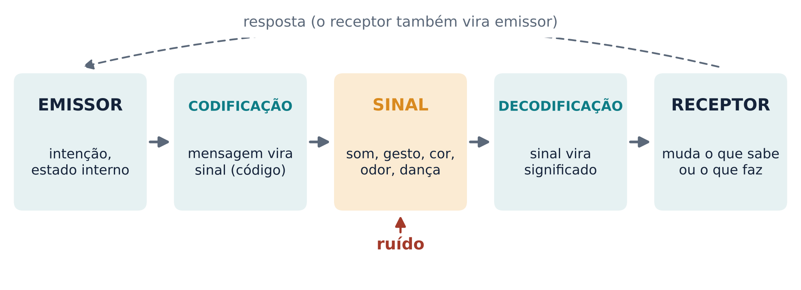
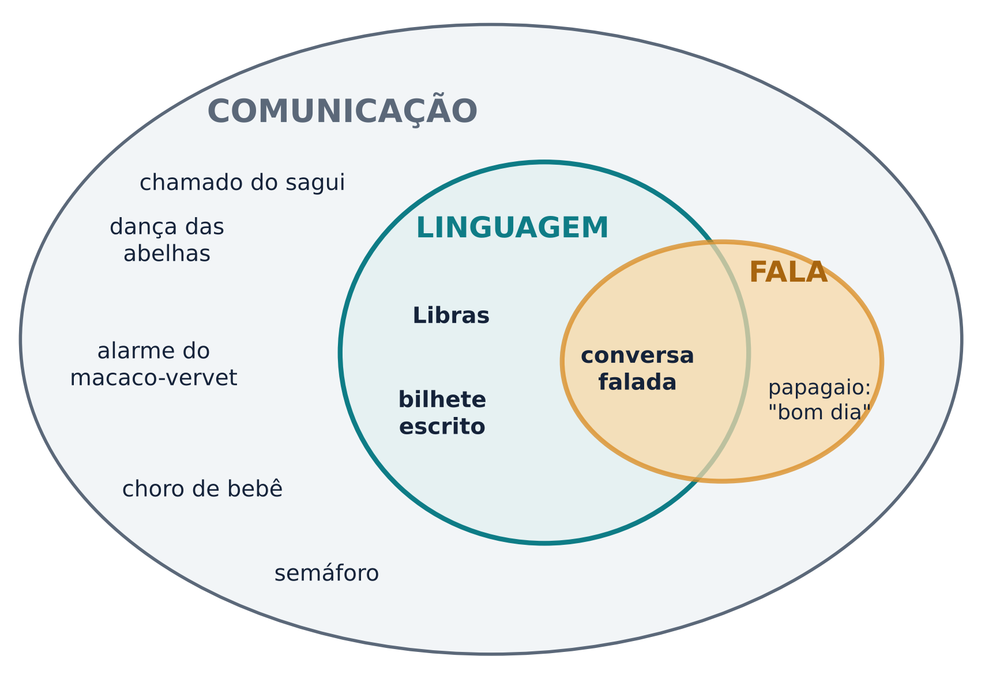
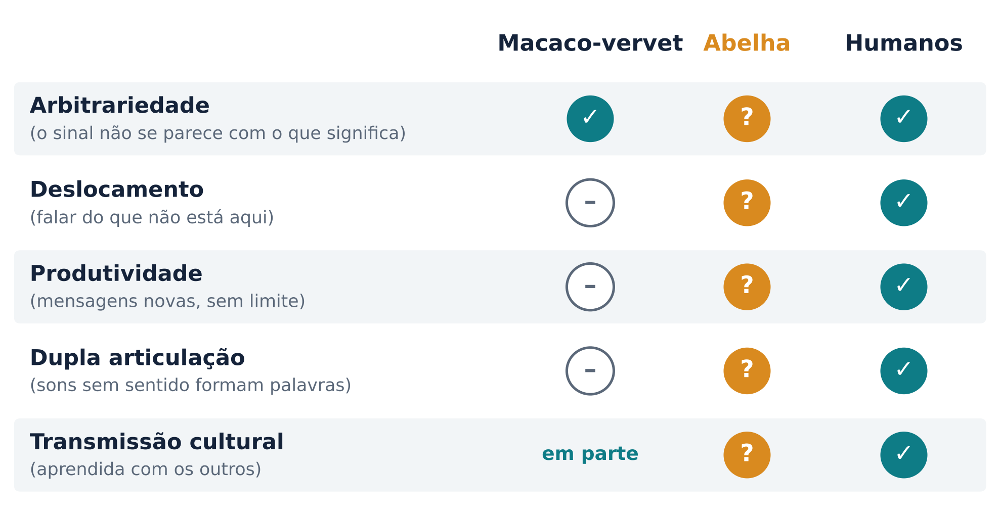
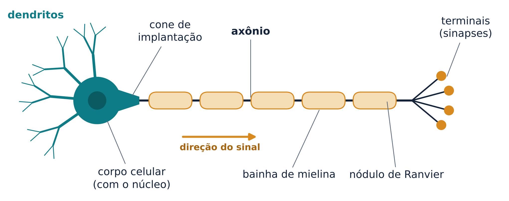
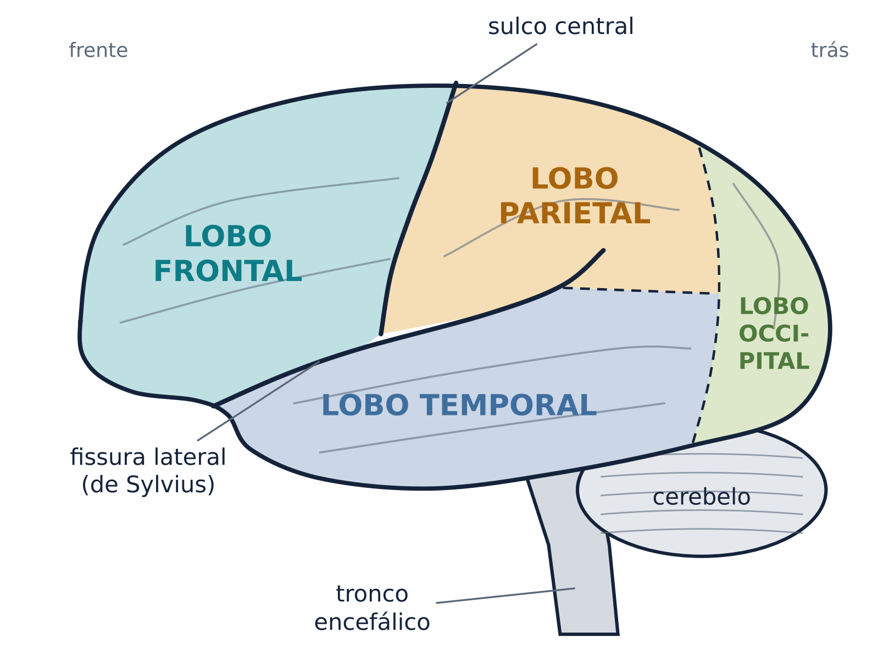
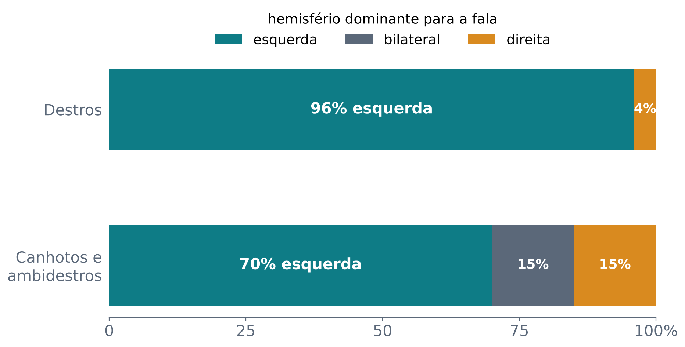

Sinais, códigos e linguagem nos animais e em nós, e o vocabulário mínimo do cérebro para o semestre
Há uma parábola antiga sobre um grupo de cegos que encontra um elefante. Um toca a tromba e diz que o animal parece uma cobra. Outro toca a perna e jura que é uma árvore. Outro toca a orelha e fala de um leque. Todos têm parte da razão, e nenhum vê o animal inteiro.
A comunicação humana é um elefante desse tipo. A linguística descreve a estrutura dos sinais: sons, palavras, frases. A psicologia mede como percebemos, lembramos e produzimos mensagens. A etologia, o estudo do comportamento animal, compara espécies e pergunta como os sinais evoluíram. A neurociência procura os circuitos que fazem tudo isso funcionar. Peter Hagoort, que organizou um dos livros de referência deste curso, defende que só vamos entender a linguagem se juntarmos vários níveis de descrição: genético, neurobiológico, psicológico e linguístico, além de modelos de computador e estudos com animais (Hagoort, 2019).
Steven Small e Gregory Hickok, organizadores do outro livro de referência, lembram um ponto de biologia básica: o cérebro humano evoluiu a partir do cérebro de outros primatas, e por isso a comparação com outras espécies é parte do trabalho (Small; Hickok, 2016). Até onde se sabe, nenhuma outra espécie viva tem uma linguagem no sentido pleno (Fitch, 2019), mas muitas se comunicam de formas sofisticadas. É por isso que esta aula começa com macacos, saguis e abelhas, que voltarão o semestre inteiro como ponto de comparação.
Em 1948, o engenheiro Claude Shannon descreveu um sistema de comunicação em cinco partes: uma fonte que produz a mensagem; um transmissor que transforma a mensagem num sinal; um canal por onde o sinal viaja; um receptor que faz a operação inversa e reconstrói a mensagem; e um destino, a pessoa ou coisa a quem a mensagem se dirige. No caminho, uma fonte de ruído pode estragar o sinal (Shannon, 1948).
O curso usa uma versão simplificada desse esquema (Figura 1). Alguém (o emissor) tem algo a comunicar. Essa mensagem é codificada num sinal físico: um som, um gesto, uma cor, um cheiro, uma dança. O sinal atravessa o ambiente, onde pode sofrer ruído. Do outro lado, o receptor decodifica o sinal e muda o que sabe ou o que faz. E o receptor pode responder, virando emissor.

Sinal é algo físico que viaja. Código é a regra que liga o sinal ao significado, e emissor e receptor precisam compartilhá-la: “chuva” só quer dizer chuva para quem fala português.
Nas pessoas, a decodificação depende muito do que o receptor já sabe. Pesquisadores da compreensão da fala descrevem o ouvinte como alguém que infere o que o falante provavelmente quis dizer, combinando o que ouviu com o que espera ouvir naquele contexto: é o modelo do “canal ruidoso”, inspirado em Shannon (Dahan; Ferreira, 2019). Numa ligação ruim, você completa as palavras que não ouviu.
Entre as pessoas, comunicar também envolve intenção. O filósofo Paul Grice propôs que, quando alguém quer dizer algo, ele quer que o ouvinte perceba essa intenção de comunicar. Stephen Levinson retoma essa ideia de Grice e lembra que os bebês entram muito cedo no jogo da interação: trocas recíprocas com o bebê aparecem a partir dos três meses de vida, muito antes de ele produzir linguagem (Levinson, 2019).
Nos animais é difícil saber o que o emissor “pretende”, e a área tem um debate antigo (Rossano, 2019). Para a corrente da informação, comunicar é codificar e decodificar informação, no espírito de Shannon. Para a da manipulação, a seleção natural favoreceu sinais feitos para influenciar os outros, e falar em “informação” seria projetar a comunicação humana nos animais (Rossano, 2019).
O biólogo Jakob von Uexküll chamou de Umwelt o mundo próprio de cada animal: tudo o que ele percebe forma seu mundo de percepção, tudo o que ele faz forma seu mundo de ação, e os dois juntos formam o seu ambiente (Uexküll, 2010). Uma abelha e uma pessoa podem estar no mesmo jardim e viver em mundos muito diferentes. A consequência para a comunicação é direta: um sinal só funciona se cair dentro do mundo sensorial do receptor.
Comunicar é usar um sinal, com um código compartilhado, para mudar o que o outro sabe ou faz. O receptor não copia o sinal: ele o interpreta com o que já sabe, dentro do seu próprio mundo sensorial.
Os macacos-vervet, da África, fogem de cada predador de um jeito: sobem em árvores quando há um leopardo, correm para o mato fechado quando uma águia circula no céu e ficam em pé olhando o chão quando há uma cobra (Fischer; Hage, 2019). Eles também dão chamados de alarme diferentes para cada tipo de predador.
A pergunta de Robert Seyfarth, Dorothy Cheney e Peter Marler foi: o som sozinho basta? Eles gravaram os alarmes e os tocaram num alto-falante, sem nenhum predador por perto. Os macacos responderam com a fuga certa: subiram em árvores ao ouvir o alarme de leopardo, olharam para o céu ao ouvir o de águia e olharam para baixo ao ouvir o de cobra (Seyfarth; Cheney; Marler, 1980). O som, portanto, carrega informação sobre uma categoria de perigo, e não apenas sobre o susto de quem grita. Chamamos isso de comunicação referencial.
O mesmo estudo mostrou um detalhe importante. Os adultos dão alarme quase só para leopardos, águias marciais e pítons. Os filhotes dão alarme de leopardo para vários mamíferos, de águia para muitas aves e de cobra para vários objetos parecidos com cobras, e a classificação melhora com a idade e a experiência (Seyfarth; Cheney; Marler, 1980). A forma dos chamados dos primatas é considerada inata e pouco flexível (Rossano, 2019), mas o uso dela se refina com a vida.
Nem todos concordam sobre o quanto esses alarmes se parecem com palavras. Hoje muitos pesquisadores preferem dizer que eles são funcionalmente referenciais: funcionam como se apontassem para algo do mundo, sem que isso prove uma intenção de nomear (Rossano, 2019). Fischer e Hage (2019) acrescentam que vervets produzem sons parecidos com o alarme de cobra também em encontros com outros grupos, e que o repertório quase não muda entre populações, o que afasta esses alarmes dos símbolos humanos, cujos rótulos são escolhidos e aprendidos.
O sagui-de-tufo-branco é um macaco pequeno e muito vocal. Quando os saguis de uma família se separam, eles emitem chamados de contato, e o chamado de um costuma provocar a resposta do outro (Fischer; Hage, 2019). Medindo essas trocas, Takahashi, Narayanan e Ghazanfar (2013) mostraram que os saguis se revezam: um chama, o outro responde, em sequências longas, com uma dinâmica parecida com a proposta para o revezamento na conversa humana. Levinson (2019) mostra que esse revezamento vocal aparece em vários ramos dos primatas, e não só em nós.
Nos dois primeiros meses de vida, os chamados dos filhotes de sagui mudam de um jeito que lembra o desenvolvimento vocal dos bebês humanos, e essa mudança depende tanto do crescimento do corpo quanto das respostas dos pais (Takahashi et al., 2015). Quando os pais respondem aos chamados do filhote, o amadurecimento dos chamados se acelera (Fischer; Hage, 2019). Ainda assim, até onde se sabe, primatas não humanos não aprendem a produzir chamados novos (Rossano, 2019). É comunicação vocal rica, mas sem palavras e sem gramática.
Os três termos não são sinônimos (Figura 2).

As línguas de sinais das comunidades surdas são línguas naturais completas, e não derivam das línguas faladas pelos ouvintes ao redor (Özyürek; Woll, 2019). No Brasil, a Língua Brasileira de Sinais (Libras) é reconhecida por lei como meio legal de comunicação e expressão, um sistema linguístico de natureza visual-motora com estrutura gramatical própria (Brasil, 2002).
Um sinal se forma pela combinação de uma configuração de mão, de um lugar no corpo ou no espaço e de um movimento; trocar um desses parâmetros pode mudar o significado, como trocar um som muda “pato” para “gato” (Özyürek; Woll, 2019). Hickok, Bellugi e Klima (1996) estudaram 23 sinalizantes surdos com lesão em um só hemisfério. Mesmo usando um canal visual e espacial, a linguagem deles dependia do hemisfério esquerdo, como a de ouvintes. Lesões no hemisfério direito podem atrapalhar habilidades visuoespaciais, mas não produzem afasia de sinais (Özyürek; Woll, 2019). Conclusão: a especialização do cérebro é para a linguagem, e não para o som.
O caminho inverso é a fala sem linguagem: o papagaio que diz “bom dia” produz fala e talvez se comunique, mas repetir uma frase pronta não é combinar partes para criar mensagens novas.
Em 1960, o linguista Charles Hockett propôs uma lista de 13 traços de desenho (design features) da linguagem humana, comparando-a com o canto dos pássaros, a dança das abelhas e os chamados de gibões (Hockett, 1960). Cinco traços separam bem os sistemas (Figura 3):

Os alarmes do vervet são arbitrários, mas são poucos, não se combinam em mensagens novas e são dados diante do perigo presente. Na transmissão cultural, a figura marca “em parte”: a forma do som é pouco aprendida, mas o uso correto do alarme melhora com a idade e a experiência (Seyfarth; Cheney; Marler, 1980).
Hoje a maioria dos pesquisadores trata a linguagem como um sistema de vários componentes, alguns compartilhados com outras espécies e outros não (Fitch, 2019). O debate é sobre quais componentes são exclusivos. Hauser, Chomsky e Fitch (2002) separaram a faculdade da linguagem “em sentido amplo”, que inclui sistemas sensoriais, motores e conceituais, e a faculdade “em sentido estrito”, que seria só a recursão: a capacidade de encaixar estruturas dentro de estruturas, como em “o livro que a amiga que você conheceu me emprestou”. Para eles, só esse núcleo seria exclusivamente humano. Pinker e Jackendoff (2005) discordaram: muitos aspectos da gramática não são recursivos (a fonologia, a morfologia, a concordância, as propriedades das palavras) e também parecem especiais. Para eles, a linguagem é uma adaptação complexa para a comunicação, que evoluiu por partes. A discussão continua.
Karl von Frisch decifrou a dança que as abelhas operárias fazem no favo ao voltar de uma fonte de alimento. Na dança do requebrado, a abelha percorre uma linha reta balançando o abdômen. O ângulo dessa linha em relação à vertical do favo indica o ângulo entre o alimento e o sol: se o alimento está na direção do sol, a corrida aponta para cima; se está 40° à esquerda do sol, a corrida se desvia 40° à esquerda da vertical. Distâncias maiores são indicadas por requebrados mais longos (Frisch, 1973). Use os traços de Hockett para responder à pergunta para casa: essa dança é uma linguagem?
A ideia de que o cérebro funciona pela atividade coordenada de células independentes, os neurônios, chama-se doutrina do neurônio e é atribuída ao espanhol Santiago Ramón y Cajal (Mildner, 2008). Cajal dividiu o Prêmio Nobel de Fisiologia ou Medicina de 1906 com o italiano Camillo Golgi, “em reconhecimento ao trabalho sobre a estrutura do sistema nervoso” (Nobel Prize Outreach, 2026).
Um neurônio típico tem quatro partes (Figura 4). Os dendritos recebem a maior parte dos sinais de outros neurônios. O corpo celular contém o núcleo. O axônio leva o sinal para longe; ele começa no cone de implantação, onde nasce o potencial de ação, e termina em vários terminais que fazem contato com outras células (Mildner, 2008). Cada neurônio pode receber contatos de milhares de outros, com efeitos excitatórios (que aumentam a chance de disparar) ou inibitórios (que diminuem) (Mildner, 2008).

Quantos neurônios temos? Por muito tempo se repetiu “cem bilhões”. Pesquisadores da Universidade Federal do Rio de Janeiro desenvolveram uma técnica nova para contar as células do cérebro, o fracionador isotrópico (Zorzetto, 2012). Resultado: o cérebro de homens adultos tem em média 86,1 bilhões de neurônios e 84,6 bilhões de células não neuronais, como as da glia. Só 19% desses neurônios estão no córtex cerebral (Azevedo et al., 2009). A recontagem também derrubou a ideia, ainda presente em livros de 2008, de que as células da glia seriam talvez dez vezes mais numerosas que os neurônios (Mildner, 2008; Zorzetto, 2012).
Em repouso, o interior do neurônio é negativo em relação ao exterior, cerca de −70 milivolts (Mildner, 2008). Quando as entradas excitatórias que chegam ao mesmo tempo, ou em sequência rápida, somam o suficiente para passar de um limiar, o neurônio dispara um potencial de ação: uma inversão rápida da voltagem, de cerca de −70 para cerca de +50 milivolts, causada pela mudança da permeabilidade da membrana aos íons sódio e potássio (Mildner, 2008). Logo depois do disparo vem o período refratário, de 1 a 2 milissegundos, em que um novo potencial de ação não acontece qualquer que seja o estímulo (Mildner, 2008).
O potencial de ação segue o princípio do “tudo ou nada”: ele acontece ou não acontece. O neurônio não dispara “mais forte” quando a entrada é maior; as mensagens diferem na frequência e no momento dos disparos (Mildner, 2008).
Muitos axônios são envoltos pela mielina, uma camada de gordura que os isola (Mildner, 2008). Ela tem interrupções, os nódulos de Ranvier, e o potencial de ação salta de nódulo em nódulo, o que acelera a condução (Purves et al., 2001). Axônios sem mielina conduzem a cerca de 0,5 a 10 metros por segundo; axônios mielinizados chegam a até 150 metros por segundo (Purves et al., 2001). A perda de mielina, como na esclerose múltipla, causa vários problemas neurológicos (Purves et al., 2001).
O ponto de contato entre dois neurônios é a sinapse. Na maioria das sinapses do cérebro dos mamíferos, as químicas, um espaço de 10 a 100 nanômetros, a fenda sináptica, separa as duas células (Mildner, 2008). O potencial de ação chega ao terminal e libera neurotransmissores guardados em pequenas bolsas, as vesículas. As moléculas atravessam a fenda e se ligam a receptores da célula seguinte, deixando-a mais perto ou mais longe de disparar. Essa passagem leva menos de 1 milissegundo (Mildner, 2008). Existem também sinapses elétricas, em que as membranas se tocam e a transmissão é muito rápida, mas elas são rígidas; as químicas mudam muito com a experiência, ficando mais fortes ou mais fracas (Mildner, 2008). Para Mildner (2008), aprendizado e memória seriam impossíveis num sistema nervoso que tivesse só sinapses elétricas.
O “fio” do sistema nervoso é rápido; o que custa tempo são as passagens. Cada sinapse acrescenta uma fração de milissegundo, e uma simples reação a uma luz atravessa muitas camadas de neurônios, decisões e músculos.
Cada hemisfério cerebral se divide em quatro lobos, separados por marcos anatômicos (Figura 5). O sulco central separa o lobo frontal, à frente, do parietal, atrás. A fissura lateral, ou de Sylvius, separa o lobo temporal dos lobos frontal e parietal. O lobo occipital fica atrás (Mildner, 2008). No fundo da fissura lateral há ainda a ínsula, às vezes chamada de quinto lobo (Mildner, 2008). Os dois hemisférios são ligados por feixes de fibras, e o maior deles é o corpo caloso (Mildner, 2008).

Algumas funções para começar:
Embaixo do cérebro ficam o cerebelo, que coordena e suaviza os movimentos, e o tronco encefálico, que liga o cérebro à medula e cuida de funções vitais como a respiração (Mildner, 2008).
A ideia de que a linguagem depende de lugares específicos do cérebro ganhou força com dois médicos do século XIX. Em 1861, Paul Broca examinou Louis Victor Leborgne, um paciente de um hospital de Paris com grande dificuldade para falar: diz-se que ele só produzia a sílaba “tan”. Na autópsia, Broca encontrou uma lesão no giro frontal inferior esquerdo, na parte de trás (Small; Hickok, 2016). Depois, Broca reuniu outros pacientes com dificuldade de produzir fala e lesão no lobo frontal esquerdo, à frente da área motora; essa região passou a se chamar área de Broca (Mildner, 2008). Em 1874, Carl Wernicke descreveu uma afasia “sensorial”, com problemas de compreensão, causada por lesões na parte de trás do giro temporal superior, a área de Wernicke (Mildner, 2008). Em 1885, Ludwig Lichtheim organizou esses achados num diagrama de centros ligados por conexões (Small; Hickok, 2016). A aula 2 volta a essa história.
O cérebro de Leborgne foi preservado até hoje. Em 2007, Nina Dronkers e colegas o examinaram com ressonância magnética de alta resolução. A lesão ia bem além da superfície que Broca descreveu e se estendia para regiões mais profundas, em direção ao meio do cérebro. Os autores também notaram que a região que Broca identificou não coincide exatamente com o que hoje chamamos de “área de Broca” (Dronkers et al., 2007). A lição é importante para o semestre: Broca e Wernicke são pontos de partida históricos, e a linguagem usa uma rede muito maior.
Como saber de que lado fica a linguagem de uma pessoa? Antes de algumas cirurgias no cérebro, como as de epilepsia, os médicos podem usar o teste de Wada: um anestésico injetado na artéria carótida de um lado “adormece” por alguns minutos o hemisfério daquele lado. Se a pessoa não consegue falar, recitar ou nomear objetos durante esse tempo, aquele hemisfério é o dominante para a linguagem (Mildner, 2008).
Na maior e mais citada série clássica de pacientes testados assim (Loring et al., 1990), Rasmussen e Milner (1977) examinaram pacientes sem sinais de lesão precoce do hemisfério esquerdo. Entre os destros, 96% tinham a linguagem no hemisfério esquerdo e os demais no direito. Entre os canhotos e ambidestros, 70% tinham a linguagem à esquerda; os outros se dividiam igualmente entre representação bilateral e dominância direita, 15% cada (Loring et al., 1990). A Figura 6 mostra esses números.

Esses números vêm de pacientes candidatos a cirurgia, que não representam a população inteira, e outros estudos chegam a proporções um pouco diferentes. Loring e colegas (1990), testando 103 candidatos a cirurgia, encontraram linguagem só à esquerda em 79, só à direita em 2 e representação bilateral em 22, e concluíram que a linguagem restrita ao hemisfério direito é rara. Em pessoas saudáveis, Knecht e colegas (2000) mediram a lateralização de 326 voluntários com ultrassom (Doppler transcraniano) enquanto eles geravam palavras. A dominância direita apareceu em 4% dos destros fortes, 15% dos ambidestros e 27% dos canhotos fortes. Ou seja: mesmo entre canhotos, a maioria tem a linguagem à esquerda.
O hemisfério direito não fica parado. Há bastante evidência de que ele participa do processamento de emoções, e vários estudos o ligam à prosódia, a melodia da fala. Mas aqui também há debate: uma hipótese diz que o direito domina toda a prosódia; outra, que ele domina a prosódia emocional e o esquerdo a prosódia linguística (por exemplo, a diferença entre pergunta e afirmação) (Mildner, 2008). As aulas 8 a 10 voltam a esse tema.
“A linguagem fica no lado esquerdo” é uma simplificação. O certo é dizer que, na maioria das pessoas, ela depende mais do hemisfério esquerdo; que essa proporção varia com a lateralidade das mãos; e que o hemisfério direito contribui com outras partes da comunicação.
Os números exatos da turma variam com o celular, a fila e a prática, mas a direção dos efeitos costuma ser a mesma.
Experimento 1 · Telefone sem fio. Uma frase com números, cores e nomes passou por cinco a oito pessoas. O esperado é que a mensagem encolha e fique mais “normal”: detalhes somem ou mudam, aparecem sinônimos, e o sentido geral sobrevive melhor que as palavras exatas. O psicólogo Frederic Bartlett estudou esse fenômeno com a reprodução serial de uma história, passada de pessoa em pessoa, e concluiu que lembrar é reconstruir, e não copiar (Bartlett, 1932). Volte à Figura 1: a tela do celular é um canal perfeito, então o “ruído” estava dentro de cada cérebro, na codificação e na decodificação. Cada pessoa guardou o sentido e reconstruiu as palavras, como o ouvinte que infere o que o falante quis dizer (Dahan; Ferreira, 2019).
Experimento 2 · É comunicação? É linguagem? Na resposta de referência, só a frase em Libras e o bilhete escrito são linguagem. A dança das abelhas, o alarme do vervet, o semáforo, o choro do bebê, a trilha de feromônio da formiga, o chamado do sagui e o papagaio que diz “bom dia” ficam em comunicação (o papagaio, talvez: ele é sobretudo fala sem linguagem). Ficar vermelho de vergonha aparece como “não é comunicação” para muitos, porque é uma pista involuntária. Três casos são de fato debatidos: a dança, o papagaio e o rubor. Se a turma se dividiu, isso é bom sinal: a pergunta útil é qual traço de Hockett está faltando em cada caso.
Experimento 3 · Tempo de reação. Na parte A você só tocava quando a cor mudava; na parte B precisava escolher o botão certo. A parte B é mais lenta, e a diferença entre as duas estima o tempo extra de decidir. A ideia de usar o tempo de reação para medir processos mentais remonta ao fisiologista holandês F. C. Donders, que publicou em 1868-1869 um estudo sobre a velocidade dos processos mentais, traduzido para o inglês um século depois (Donders, 1969). Entre a luz chegar ao olho e o dedo tocar a tela, o sinal passa pela retina, pelo córtex visual, por áreas que decidem, pelo córtex motor, pela medula e pelos músculos. Uma parte do tempo medido também vem da própria tela e do toque do celular, por isso a diferença entre A e B é mais confiável que os valores absolutos.
Experimento 4 · Corrente de neurônios. A turma fez uma roda e passou um aperto de mão. Faça a conta com uma estimativa grosseira, a mesma da página do laboratório: em cada pessoa, o sinal percorre cerca de 1,5 metro de nervo, da mão à medula e ao cérebro e de volta à outra mão. A 100 metros por segundo, velocidade dentro da faixa dos axônios mielinizados (Purves et al., 2001), esse trecho levaria só 15 milissegundos. O tempo por pessoa na roda costuma ser bem maior que isso, e cai com a prática. A diferença está nas sinapses, na decisão e na contração do músculo: cada pessoa da roda fez, na verdade, uma reação simples ao toque, o mesmo que o experimento 3 mediu.
Experimento 5 · Rotule o cérebro. Os erros mais comuns costumam ser trocar Broca com Wernicke e parietal com occipital. Para fixar: o sulco central separa frontal e parietal; a fissura lateral fica acima do temporal; Broca fica no frontal, à frente da área motora; Wernicke fica no temporal, atrás.
Uma colega diz que o modelo de Shannon resolve tudo: basta o canal ser bom para a mensagem chegar intacta. Use o experimento do telefone sem fio para responder.
Resposta
No telefone sem fio, o canal (a tela) era perfeito e mesmo assim a frase mudou. O que mudou a mensagem foi a codificação e a decodificação dentro de cada pessoa: guardamos o sentido e reconstruímos as palavras, como mostrou Bartlett. O receptor interpreta com o que já sabe, e não copia.
Por que o experimento de Seyfarth, Cheney e Marler precisou tocar gravações sem nenhum predador por perto?
Resposta
Se houvesse um predador, os macacos poderiam fugir porque o viram, e não por causa do alarme. Tocando só o som, os pesquisadores mostraram que o chamado sozinho basta para provocar a fuga certa. Isso indica que o som carrega informação sobre o tipo de perigo.
Dê um exemplo de linguagem sem fala e um de fala sem linguagem, e diga o que eles mostram.
Resposta
Libras é linguagem sem fala: tem gramática própria e usa as mãos, o rosto e o espaço. O papagaio que repete “bom dia” produz fala sem linguagem, porque não combina partes para criar mensagens novas. Juntos, mostram que a linguagem é um sistema mais abstrato que o canal usado para transmiti-la.
O que o estudo de sinalizantes surdos com lesões cerebrais acrescenta à discussão sobre o hemisfério esquerdo?
Resposta
Se o hemisfério esquerdo fosse especializado só em sons rápidos, lesões nele não deveriam afetar uma língua visual. Mas lesões à esquerda causam afasia em sinalizantes, e lesões à direita não. Isso sugere que a especialização é para a linguagem em si, e não para o canal auditivo.
Os alarmes dos vervets são arbitrários. Por que, mesmo assim, a maioria dos pesquisadores não os chama de linguagem?
Resposta
Faltam outros traços de Hockett: são poucos sinais, que não se combinam para formar mensagens novas (produtividade), são dados diante do perigo presente (sem deslocamento) e não são feitos de unidades sem sentido (dualidade de padrões). Além disso, a forma dos sons quase não varia entre populações, o que sugere pouco aprendizado.
Se um axônio mielinizado conduz a dezenas de metros por segundo, por que você levou centenas de milissegundos para reagir à cor na tela?
Resposta
A condução pelo axônio é só uma parte pequena do tempo. O sinal atravessa muitas sinapses e etapas: perceber a cor, decidir, programar o movimento, e o músculo ainda precisa contrair. Na escolha entre duas cores, a decisão acrescenta mais tempo.
Uma reportagem diz que “canhotos têm a linguagem do lado direito do cérebro”. O que está errado?
Resposta
A maioria dos canhotos também tem a linguagem principalmente à esquerda. A dominância direita é mais comum em canhotos do que em destros (cerca de 27% dos canhotos fortes contra 4% dos destros fortes, em voluntários saudáveis), mas continua minoritária.
Por que dizer que “a área de Broca é o centro da fala” é uma simplificação?
Resposta
A ressonância do cérebro do próprio paciente de Broca mostrou uma lesão muito mais extensa e profunda do que a área que leva seu nome. E a linguagem depende de uma rede de regiões nos dois hemisférios, ligadas por feixes de fibras, e não de um único centro.
AZEVEDO, F. A. C. et al. Equal numbers of neuronal and nonneuronal cells make the human brain an isometrically scaled-up primate brain. Journal of Comparative Neurology, v. 513, n. 5, p. 532-541, 2009. DOI: https://doi.org/10.1002/cne.21974.
BARTLETT, F. C. Remembering: a study in experimental and social psychology. Cambridge: Cambridge University Press, 1932.
BRASIL. Lei nº 10.436, de 24 de abril de 2002. Dispõe sobre a Língua Brasileira de Sinais - Libras e dá outras providências. Brasília, DF: Presidência da República, 2002. Disponível em: https://www.planalto.gov.br/ccivil_03/leis/2002/l10436.htm. Acesso em: 3 out. 2026.
DAHAN, D.; FERREIRA, F. Language comprehension: insights from research on spoken language. In: HAGOORT, P. (org.). Human language: from genes and brains to behavior. Cambridge, MA: MIT Press, 2019. p. 21-33.
DONDERS, F. C. On the speed of mental processes. Tradução de W. G. Koster. Acta Psychologica, v. 30, p. 412-431, 1969. DOI: https://doi.org/10.1016/0001-6918(69)90065-1.
DRONKERS, N. F. et al. Paul Broca’s historic cases: high resolution MR imaging of the brains of Leborgne and Lelong. Brain, v. 130, n. 5, p. 1432-1441, 2007. DOI: https://doi.org/10.1093/brain/awm042.
FISCHER, J.; HAGE, S. R. Primate vocalization as a model for human speech: scopes and limits. In: HAGOORT, P. (org.). Human language: from genes and brains to behavior. Cambridge, MA: MIT Press, 2019. p. 639-656.
FITCH, W. T. The comparative approach to the biology and evolution of language. In: HAGOORT, P. (org.). Human language: from genes and brains to behavior. Cambridge, MA: MIT Press, 2019. p. 623-637.
FRISCH, K. von. Decoding the language of the bee. Nobel Lecture, Estocolmo, 12 dez. 1973. Disponível em: https://www.nobelprize.org/uploads/2018/06/frisch-lecture.pdf. Acesso em: 3 out. 2026.
HAGOORT, P. Introduction. In: HAGOORT, P. (org.). Human language: from genes and brains to behavior. Cambridge, MA: MIT Press, 2019. p. 1-3.
HAUSER, M. D.; CHOMSKY, N.; FITCH, W. T. The faculty of language: what is it, who has it, and how did it evolve? Science, v. 298, n. 5598, p. 1569-1579, 2002. DOI: https://doi.org/10.1126/science.298.5598.1569.
HICKOK, G.; BELLUGI, U.; KLIMA, E. S. The neurobiology of sign language and its implications for the neural basis of language. Nature, v. 381, n. 6584, p. 699-702, 1996. DOI: https://doi.org/10.1038/381699a0.
HOCKETT, C. F. The origin of speech. Scientific American, v. 203, n. 3, p. 88-96, 1960. DOI: https://doi.org/10.1038/scientificamerican0960-88.
KNECHT, S. et al. Handedness and hemispheric language dominance in healthy humans. Brain, v. 123, n. 12, p. 2512-2518, 2000. DOI: https://doi.org/10.1093/brain/123.12.2512.
LEVINSON, S. C. Interactional foundations of language: the interaction engine hypothesis. In: HAGOORT, P. (org.). Human language: from genes and brains to behavior. Cambridge, MA: MIT Press, 2019. p. 189-200.
LORING, D. W. et al. Cerebral language lateralization: evidence from intracarotid amobarbital testing. Neuropsychologia, v. 28, n. 8, p. 831-838, 1990. DOI: https://doi.org/10.1016/0028-3932(90)90007-B.
MILDNER, V. The cognitive neuroscience of human communication. New York: Lawrence Erlbaum Associates, 2008.
NOBEL PRIZE OUTREACH. The Nobel Prize in Physiology or Medicine 1906. NobelPrize.org, 2026. Disponível em: https://www.nobelprize.org/prizes/medicine/1906/summary/. Acesso em: 3 out. 2026.
ÖZYÜREK, A.; WOLL, B. Language in the visual modality: co-speech gesture and sign language. In: HAGOORT, P. (org.). Human language: from genes and brains to behavior. Cambridge, MA: MIT Press, 2019. p. 67-83.
PINKER, S.; JACKENDOFF, R. The faculty of language: what’s special about it? Cognition, v. 95, n. 2, p. 201-236, 2005. DOI: https://doi.org/10.1016/j.cognition.2004.08.004.
PURVES, D. et al. (org.). Neuroscience. 2. ed. Sunderland, MA: Sinauer Associates, 2001. Disponível em: https://www.ncbi.nlm.nih.gov/books/NBK10921/. Acesso em: 3 out. 2026.
RASMUSSEN, T.; MILNER, B. The role of early left-brain injury in determining lateralization of cerebral speech functions. Annals of the New York Academy of Sciences, v. 299, n. 1, p. 355-369, 1977. DOI: https://doi.org/10.1111/j.1749-6632.1977.tb41921.x.
ROSSANO, F. The structure and timing of human versus primate social interaction. In: HAGOORT, P. (org.). Human language: from genes and brains to behavior. Cambridge, MA: MIT Press, 2019. p. 201-219.
SEYFARTH, R. M.; CHENEY, D. L.; MARLER, P. Monkey responses to three different alarm calls: evidence of predator classification and semantic communication. Science, v. 210, n. 4471, p. 801-803, 1980. DOI: https://doi.org/10.1126/science.7433999.
SHANNON, C. E. A mathematical theory of communication. The Bell System Technical Journal, v. 27, p. 379-423, 623-656, 1948.
SMALL, S. L.; HICKOK, G. The neurobiology of language. In: HICKOK, G.; SMALL, S. L. (org.). Neurobiology of language. London: Academic Press, 2016. p. 3-9. DOI: https://doi.org/10.1016/B978-0-12-407794-2.00001-8.
TAKAHASHI, D. Y.; NARAYANAN, D. Z.; GHAZANFAR, A. A. Coupled oscillator dynamics of vocal turn-taking in monkeys. Current Biology, v. 23, n. 21, p. 2162-2168, 2013. DOI: https://doi.org/10.1016/j.cub.2013.09.005.
TAKAHASHI, D. Y. et al. The developmental dynamics of marmoset monkey vocal production. Science, v. 349, n. 6249, p. 734-738, 2015. DOI: https://doi.org/10.1126/science.aab1058.
UEXKÜLL, J. von. A foray into the worlds of animals and humans: with A theory of meaning. Minneapolis: University of Minnesota Press, 2010.
ZORZETTO, R. Números em revisão: recontagem de neurônios põe em xeque ideias da neurociência. Pesquisa FAPESP, n. 192, fev. 2012. Disponível em: https://revistapesquisa.fapesp.br/números-em-revisão/. Acesso em: 3 out. 2026.
Material de estudo da disciplina Bases neurais da comunicação humana (UFRN), Prof. Daniel Y. Takahashi. Texto e figuras elaborados para o curso; as fontes estão nas Referências.